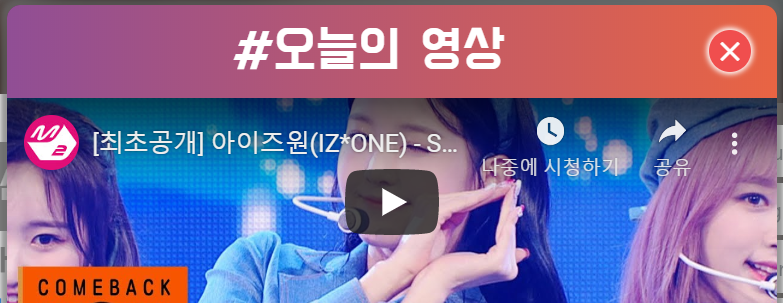
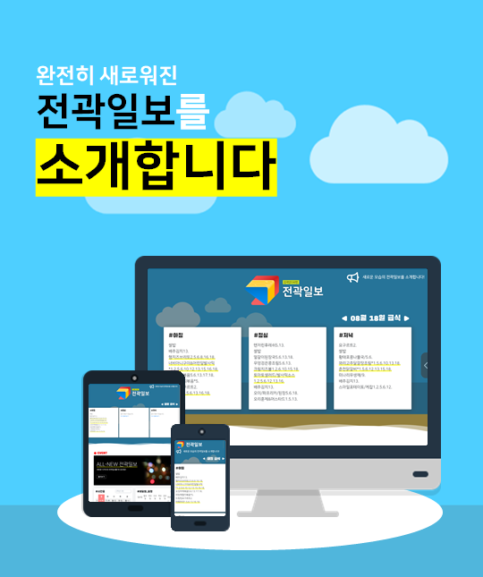
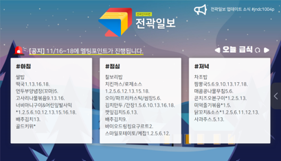
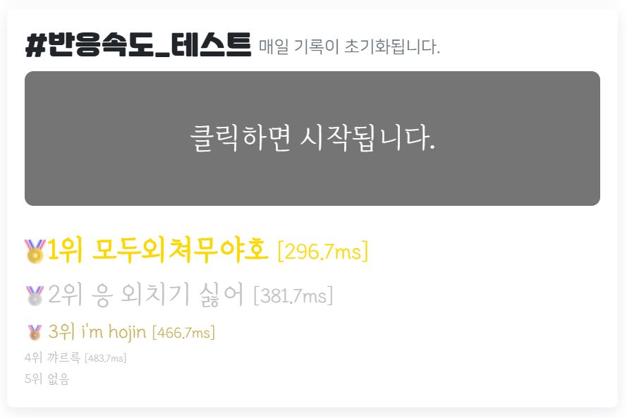
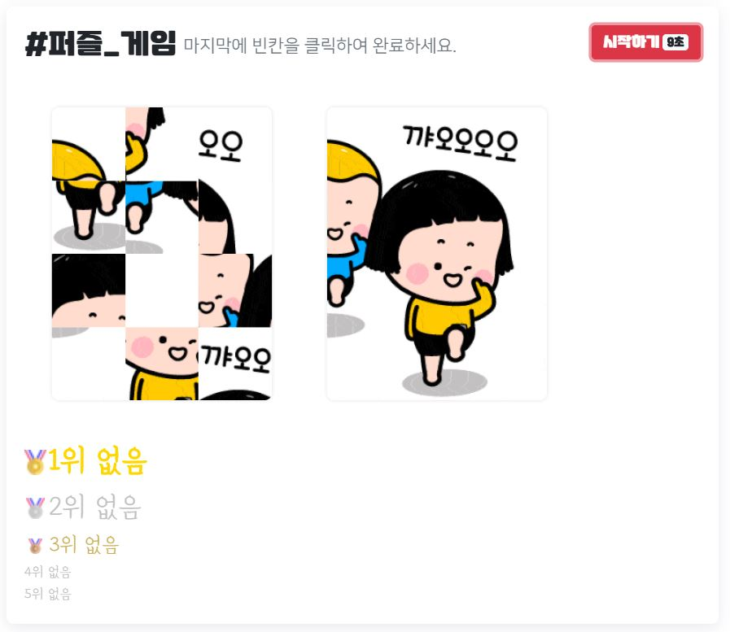

Updates
오리지널 HUZIKIM 스타일의 초록색 바탕에 만들어진 초기의 전곽일보는 이름이 전곽NEWS였답니다. 조금은 촌스러운 아이콘이긴 했지만 전곽 분위기가 몰씬
느껴지는 아이콘이였죠. 전곽NEWS 때부터 본 사람 있나요?
고민 끝에 전곽을 알리는 신문이라는 뜻의 '전곽일보'로 이름을 변경했습니다. 아이콘도 그에 맞춰서 신문 느낌으로 만들어졌습니다. 이 아이콘은 2018-2019년 까지 사랑받게 되죠.
후지킴이 추천해 주는 영상을 바로바로 볼 수 있는 디스코 탭을 추가했습니다. 이곳에서 추천 유튜브 영상 또는 이벤트 광고가 이루어졌습니다. 2019년부터는 사실상 종료된 서비스입니다.
설마 대포를 모르시는 분이 있을까요?
펑! 소리가 제맛인 대포를 온라인에서 만날 수 있게 되었습니다.
하지만!! 2021년 부터는 웹상에서 플래시
사용이 금지된다고 합니다 ㅠ
2021년에는 다른 형태의 대포가 나타날 수도?!
전곽일보를 대표하는 귀여운 마스코트 꽈기가 탄생합니다!
꽃송이와 비슷한 얼굴을 가진 꽈기는 이후에 페이스북 페이지에서 자주 등장하게 되죠.
더 빠른 정보 전달을 위해 페이스북 페이지가 만들어졌습니다.
전곽일보 페이스북 페이지 바로가기
조금 더 즐거운 사이트를 만들고자 채팅 서비스를 시작했습니다.
이름도 마음대로 지정할 수 있어서인지.. 상황극을 하는 사람도 있더군요 :D
채팅
서비스는 2019년 2월부터 종료되어 지금은 볼 수 없답니다.
전곽일보 조회수가 1만회를 달성한 날이었습니다!
항상 많은 관심 가져주셔서 감사합니다..ㅎ
하루하루가 바쁜 전곽인들에게 일정관리는 필수!
누구나 볼 수 있고 수정할 수 있는 개방형 일정관리 플랫폼인 '전.캘'을 통해 서로 챙겨주는 전곽인의 모습을
기대하며 만들었습니다.
다른 링크로 들어가야만 확인할 수 있었던 전.캘 서비스를 전곽일보와 통합했습니다.
급식을 보다가도 손 쉽게 일정을 확인할 수 있게 되었죠.
자주 방문하는 전곽일보를 통해 과구리 소식 또한 빠르게 접할 수 있게 되었습니다.
학생회 공지사항, 청원, 동아리 활동, 분실물 등을 확인할 수
있습니다.
나머지는 과구리에서! 과구리 바로가기
기능이 하나하나 추가됨에 따라 복잡해진 전곽일보를 리뉴얼한 ALL-NEW 전곽일보를 오픈했습니다. 1주일 간의 베타테스트를 통해 부족한 부분을 보완했으며, 플래시 지원 종료에 따라 HTML5를 지원하는 새로운 온라인 대포 서비스가 시작되었습니다.


자신의 반응속도를 테스트할 수 있는 미니 게임과 함께 지금은 사라진(2021.03.18.) 퍼즐 게임도 만들어졌습니다. 얼마 후에는 랭킹 제도가 도입되어서 친구들의 경쟁이 있기도 했습니다.


시스템 개편과 관리상의 이유로 익숙했던 HuziKIM을 떠나 munzii로 이사를 왔습니다! 이전 링크는 2021.6.30. 부터 접근이 불가하니 이제부터는 jshs.munzii.com 으로 접속해주세요~
항상 응원합니다 :)
Icon Gallery